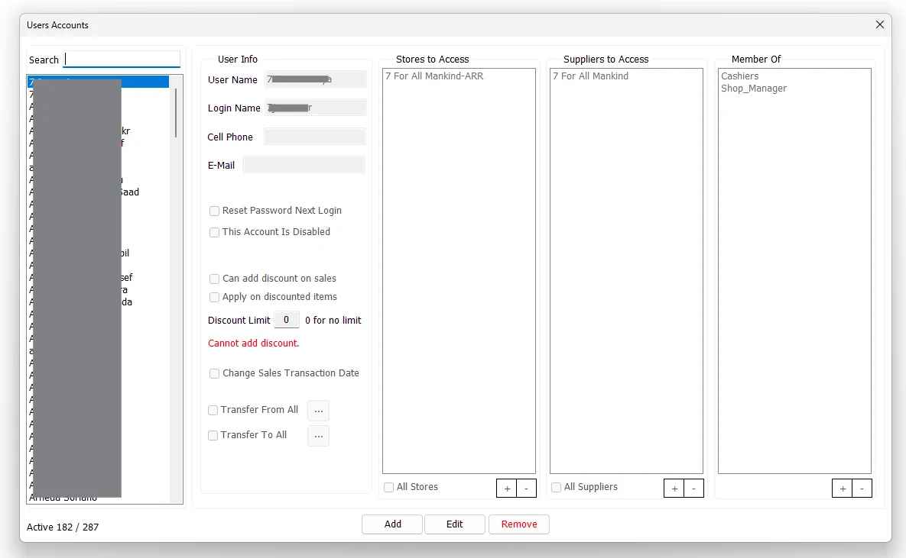

Users Accounts
Users Accounts in IMS 9.4.4 combines a global IMS identity with the selected company's operational access. Identity/login/contact and account status are global; Store, Supplier, Group Policy and transaction scope are maintained for the current company.

Find and review users
The left side lists global IMS users that currently have active access to the selected company. Use Search to filter by User Name. The counter shows active users compared with all company-access records for the current company.
User information
| Field / option | Purpose |
|---|---|
| User Name | The descriptive name shown for the IMS user. |
| Login Name | The name used to sign in to IMS. Login Name is checked for uniqueness across the global IMS user store, not only the current company. |
| Cell Phone | Optional contact number stored with the user account. |
| Optional email address. IMS validates the address format when a value is supplied. | |
| Reset Password Next Login | Resets the saved password so the user must establish a password again through the login/password workflow. |
| This Account Is Disabled | Disables the IMS account without deleting the account definition and its assigned access. |
Sales and transaction privileges
| Option | Meaning |
|---|---|
| Can add discount on sales | Allows the user to apply a manual sales discount, subject to the Discount Limit. |
| Apply on discounted items | Allows the user's permitted sales discount to be applied to items that are already discounted. |
| Discount Limit | Maximum manual discount percentage the user can apply. 0 means no limit when discount permission is enabled. |
| Change Sales Transaction Date | Allows the user to change the transaction date where that function is available in the sales workflow. |
| Transfer From All | Allows stock transfers to originate from all Stores. Clear it to restrict the user to selected source Stores. |
| Transfer To All | Allows stock transfers to be sent to all Stores. Clear it to restrict the user to selected destination Stores. |
When Can add discount on sales is cleared, IMS forces the Discount Limit to zero and disables Apply on discounted items. When it is enabled, the Discount Limit becomes editable.
Global identity vs current-company access
| Global user data | Current-company data |
|---|---|
| User Name, Login Name, Cell Phone, E-Mail, Disabled state and password-reset state. | All Stores / selected Stores, All Suppliers / selected Suppliers, sales-discount settings, change-sales-date setting, Group Policy membership and Transfer From/To scope. |
Editing the global identity changes the user's sign-in/contact record everywhere that identity is used. The access lists and operational privileges on this screen are saved for the company currently active in IMS.
Stores to Access
The Stores to Access list defines the Stores whose data the user can access where store-level security is applied.
Enable All Stores to give the account access to all Stores. Otherwise, use + to select specific Stores and - to remove selected Stores from the list.
Suppliers to Access
The Suppliers to Access list performs the equivalent data-scope control for Suppliers.
Enable All Suppliers to allow every Supplier, or maintain a restricted Supplier list with the + and - controls.
Member Of
Member Of assigns the user to IMS security groups defined under System → Group Policies. Use + to select Groups and - to remove memberships.
Group membership provides the policy/permission layer, while Store and Supplier lists provide the business-data scope. Both layers can therefore participate in the user's effective access.
Transfer From / Transfer To restrictions
Transfer permissions have their own Store scope in addition to the general Stores to Access list:
| Setting | Behavior |
|---|---|
| Transfer From All checked | The user is not restricted to a selected source-store list. |
| Transfer From All cleared | Use the adjacent ... button to select the Stores that can be used as Stock Transfer sources. |
| Transfer To All checked | The user is not restricted to a selected destination-store list. |
| Transfer To All cleared | Use the adjacent ... button to select the Stores that can be used as Stock Transfer destinations. |
If either All option is cleared, IMS requires at least one Store in that corresponding Transfer From/To list before the account can be saved.
Add a user account
- Click Add.
- Enter User Name, Login Name and any required contact information.
- Set the account status and sales/transaction privileges.
- Choose All Stores or a restricted Store list.
- Choose All Suppliers or a restricted Supplier list.
- Add the required Group Policy memberships.
- Configure Transfer From / Transfer To scope.
- Click Save.
IMS checks that the Login Name is not already used by another global IMS user. A new account starts with no password, is marked to create a password on first login, and receives active access to the current company.
Edit an account
Select a user and click Edit. Identity/contact details, account status, password reset, sales privileges, Store/Supplier access, Group membership and transfer scope can all be revised.
If Reset Password Next Login is selected during an edit, IMS clears the saved password as part of the account update and records the password reset in the activity log.
Disable or remove
You cannot remove your own access to the current company. After confirmation, IMS marks the user's current-company access inactive and removes it from the active company user list. The global identity can still exist and can still have access to other companies.
Activity logging
IMS records account creation/modification and current-company access removal in the activity log. A modification that also resets the password is logged as a password-reset account change.